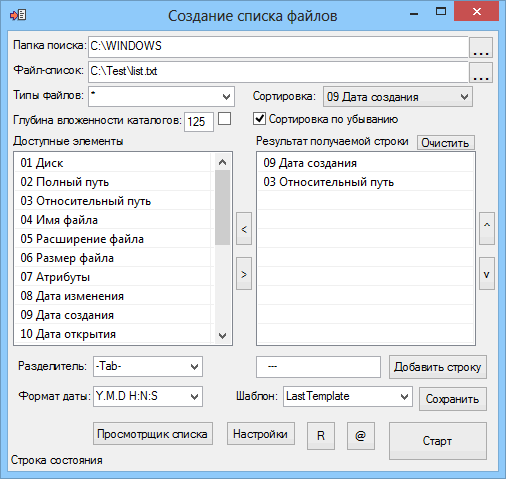

AutoIt3
Create_list_files
Назначение
Создание списка файлов.

Взаимосвязанные
FileSizesListПараметры создания списка
На поиск файлов влияют указанный путь, типы файлов (расширение), глубина вложенности каталогов и галочка для переключения типов файлов в режим исключения. Уровень вложенности 0 - корневая папка, а 125 достаточно для охвата максимально доступной глубины вложенности.
Типы файлов могут быть перечислены в виде расширений, например exe;dll;cpl;ax или в виде маски *.exe;*.dll;*.cpl;*.ax или так *.is?;s*.cp*. В режиме маски поддерживаются символы подстановки * - любое множество, и ? - любой одиночный символ. Учитывайте, что если в этом поле присутствует один из трёх символов *.? то режим автоматически переключается в режим маски и перечисление exe;dll будет соответствовать не расширениям, а файлам. Если маска задана неверно, то в некоторых случаях происходит автоматическая корректировка маски.
Список "Доступные элементы" содержит набор элементов, из которых можно составить выходной результат списка в "Результат получаемой строки". Вы можете перетаскивать элементы списка, дважды кликать, использовать кнопки или горячие клавиши как удобнее. Результат списка сформируется в горизонтальную текстовую строку для каждого отдельно взятого файла. Так же в результат можно добавить произвольную строку и установить разделитель. Это позволяет создать готовый список в виде списка копирования файлов или в виде базы данных, например табуляция позволяет открыть список в табличном редакторе в виде таблицы.
Сортировка позволяет выдать результат в виде сортированного списка по указанному критерию. Если список из нескольких тысяч файлов, то на сортировку потребуется заметное время. А сортировка по MD5 дополнительно принуждает к вычислению хеш-сумм. Сортировка по числам выполняется по значению, сортировка текстовой выполняется по алфавиту. Возраст в секундах является числом, а любые форматы даты являются текстовой информацией. Любые данные содержащие не цифры также являются текстовой информацией, даже если отдельные элементы поиска содержат только цифры
Сохранение шаблона позволяет быстро переключать готовые шаблоны результата. Например в одном случае вам необходимо проверять список новых файлов, или выдать статистику по размеру файлов
Формат даты и времени позволяет вам поменять местами элементы даты и времени, изменить разделитель между элементами даты и времени, изменить количество элементов, например выводить только год и месяц.
Пункт "Добавить в контекстное меню" позволяет вам быстро составить список для любой папки, при этом сам список будет создаваться в папке %TEMP%.
Предупреждение, если файлов более указанного количества позволяет отказаться от нежелательной обработки большого количества файлов
Просмотрщик списка файлов создаёт дерево каталогов и файлов аналогично дереву в проводнике. Это позволяет в удобном виде просмотреть список файлов. Список может состоять из полных или относительных путей. Список желательно сделать сортированным, тогда он будет быстрее открываться.
Практика
Критерий "06 Размер файла" позволяет найти самые крупные файлы. Конечно, в список нужно добавить "03 Относительный путь" к файлу и указать сортировку "06 Размер файла", с галочкой "Сортировка по убыванию". На практике я пользуюсь бесплатной программой Scanner
Добавляем один из необходимых критериев, например "13 Возраст создания", далее добавляем "03 Относительный путь" к файлу, далее указываем сортировку по "14 Возраст создания в секундах" и ставим галочку "По убыванию". Почему сортировка по возрасту в секундах? Потому что формат даты по умолчанию не позволяет правильно сортировать, если дни находятся впереди года.
Например существует каталог с вложенными каталогами содержащими файлы с разными расширениями. Необходимо разложить файлы по каталогам с их расширениями. Формируем строку CMD-файла который будет копировать файл. В начало списка добавляем текстовое поле команды копирования с необходимыми ключами, далее "02 Полный путь" к файлу, далее текстовое поле кавычек с пробелом и путь назначения, далее "05 Расширение файла", далее текстовое поле с завершающей кавычкой. После выполнения получаем список, который можно переименовать в CMD-файл и выполнить.
Можно увидеть изменения в файлах, сравнив полученные в разное время два списка в программе WinMerge. Обычно это может помочь при поиске вирусов в EXE-файлах.
Эти критерии полезны для сортировки. Например, если каталог копируется с ошибкой, можно проверить длину пути. Нельзя скопировать папку внутрь другой папки если длинна пути к вложенному файлу (включая сам файл) превысит 259 символов или уровень вложения превысит 121. Чтобы его достичь нужно в корне диска создать 121 вложенную папку из одного символа и останется 14 символов для имени файла. Поэтому на практике превышение может возникнуть по длине пути, а не по уровню вложений. Обычно это бывает при перемещении папки из корня во вложенный каталог. Программа поможет найти этот файл(ы)